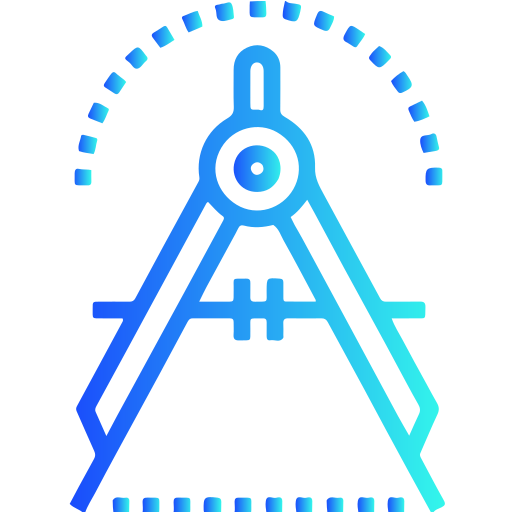
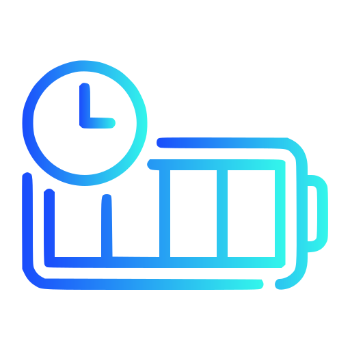
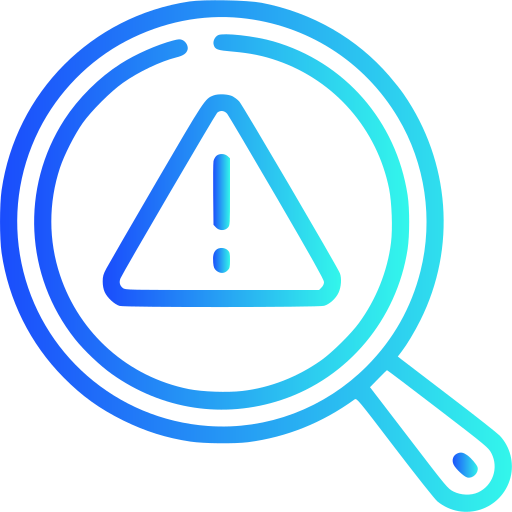
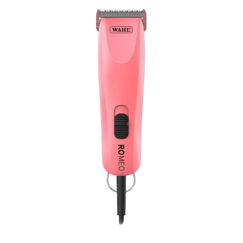
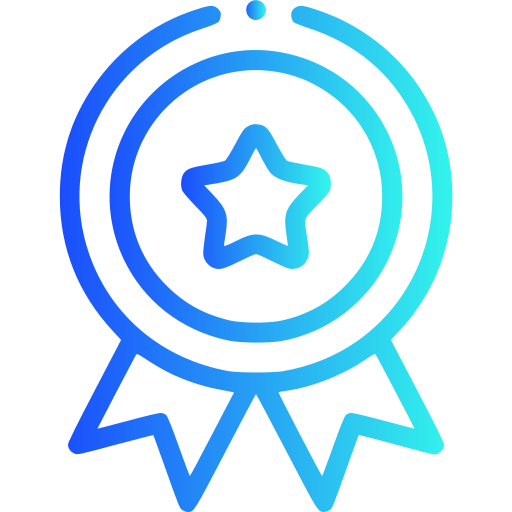
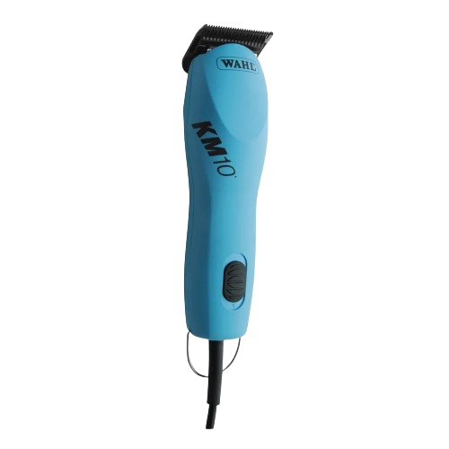

Melhora a Precisão do Corte
Uma lâmina bem afiada proporciona cortes mais precisos e limpos, facilitando o trabalho em tarefas que exigem alta exatidão.
Aumenta a Eficiência
Ferramentas e utensílios afiados exigem menos esforço para cortar, reduzindo o tempo e a energia necessários para concluir uma tarefa.

Prolonga a Vida Útil
Afiações regulares ajudam a manter a lâmina em boas condições, prevenindo o desgaste prematuro e prolongando sua durabilidade.


Reduz o Risco de Acidentes
Uma lâmina afiada realiza cortes de maneira mais controlada e segura, diminuindo a necessidade de pressão excessiva que pode levar a acidentes.


Melhora o Desempenho Geral
Lâminas afiadas funcionam de maneira mais eficaz em várias aplicações, desde utensílios de cozinha até ferramentas de trabalho, resultando em um desempenho superior.